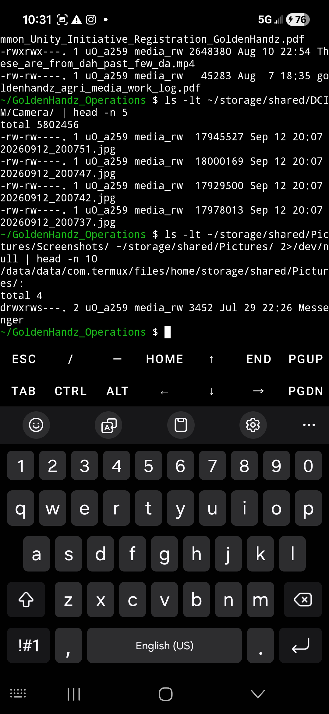

Current Planting Guilds & Sprouting Understory
As the foundational layers take root, we have actively incorporated rows of Oleana (turmeric) alongside newly seeded beds, companion crops, and living soil matrices.

Daytime overview showing our staging area, potted plant lines, and mulch preparation across the volcanic terrain.

Looking up towards the established sub-canopy foliage, integrating sunlight management with ground-level bed prep.

Utilizing blue tarp mulching and natural biomass management to suppress weed pressure and condition the soil.

Hands-on land transformation: marking out the planting zones with tools staged and rich tilled soil ready for sowing.

Close-up of the processed volcanic earth broken down and conditioned with organic matter for deep root establishment.

Site infrastructure overview featuring weed barrier fabric, corrugated metal staging, and water management setup.

Overview of active planting zones, mapping processed volcanic soil beds alongside organized tool staging.

Close-up of mixed guild featuring established taro, flowering chives, purple mustard greens, and swiss chard.

Lush rows of mature oleana (turmeric) sheltering a fresh carpet of emerging seedlings across the prepared bed.